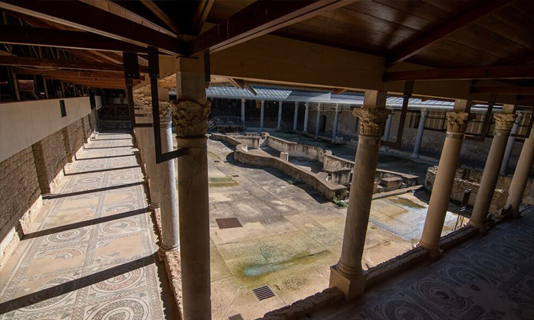
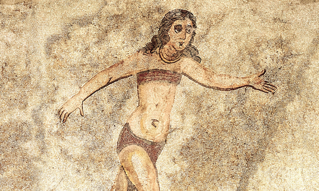
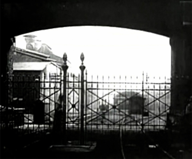
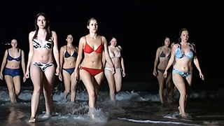
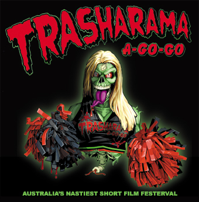

Official Movie Series Archive
Official Movie Series Archive
The Mythology
2498 BC: Egypt
Pharaoh Shepseskaf, inconsoulable over the death of his consort Amunet, ordered his sorcerer Jannes to use the Amulet of Resurrection to save her. Although Amunet was resurrected, her soul was lost to the world of the undead, becoming the first vampire. With no way to undo the spell, Shepseskaf had Amunet and Jannes entombed alive. Somehow, Amunet escaped and killed Shepseskaf.
363 AD: Italy
In order to combat a surge of vampire girls, the Villa Romana del Casale was constructed in Sicily to train a new generation of vampire hunters. For centuries, the League of Hunters were guardians of peace and justice.

1161 AD: Italy
Arsing from the depths of the Meditaranean Sea, a coven of vampire girls attack the League of Hunters, killing everyone. They left the villa completely abandoned.
1935 AD: Germany
Heinrich Himmler, a devout believer in mysticism and the occult, established the SS Occult Bureau as a division of Ahnenerbe. Set up in Wewelsburg Castle, the Bureau was tasked with searching for paranormal items, such as the Holy Grail and the Spear of Destiny.
1941 AD: Italy
The SS Occult Bureau investigate the Villa Romana del Casale, discovering lost scrolls that details a legend about super vampires.

1944 AD: France
Operation Blutsaugersicherung: an elite SS team, code named Kanarienvögel, start searching for the nest of the super vampires, tracking them to Eastern France. They managed to capture a single vampire girl in the town of Bernay. A training facility is erected to tame the vampire girl, however she escaped and slaughtered everyone. In retaliation, the town was destroyed and the vampire girls were never to be seen again.

According to local legend, every decade the killer bikini vampire girls rise from the ocean searching for victims to join their undead sisterhood.

The idea for the Killer Bikini Vampire Girls short film originated as a result of the Red Dwarf short film competition. In the episode "Legion", the fictional schlock horror film The Surfboarding Killer Bikini Vampire Girls is mentioned and so it was decided to make a spoof film, and thus the script was written for Return of the Killer Bikini Vampire Girls. The films titles are all spoofs of Star Wars film titles, and the characters are all named after the actors from the Buffy The Vampire Slayer universe.
When originally announced, there were no restrictions on films allowed to enter the Red Dwarf short film competition. While the first film was being made, however, the film competition rules were changed so that only residents of the UK could enter. Rather than just give up, the film was completed and entered into the Trasharama Film Festival instead. As part of that fiom festival, the Killer Bikini Vampire films were screen all over Australia - Perth, Adelaide, Melbourne, Sydney, Brisbane and various regional towns as well.

If you are up for some nostalgic reading, check out our Archived blog
{kind=link}
{kind=link}
{kind=link}
{kind=link}